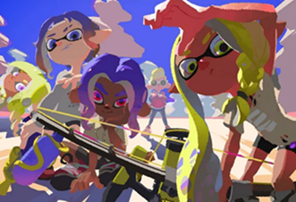

Acceuil
Bienvenue sur le site préféré des calamars ! Ici, vous trouverez toutes sortes d’informations concernant le jeu ayant reçu le prix du meilleur jeu multijoueur aux Game Awards 2022. Vous souhaitez partager vos temps forts et les moments les plus drôles capturés en jeu ? La rubrique "Galerie photo" est à votre disposition ! Vous avez des recommandations ou souhaitez partager votre avis sur le site ? La section "Commentaires" est là pour vous.